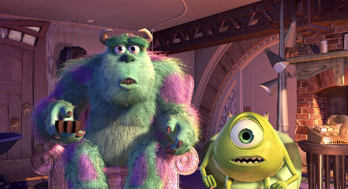
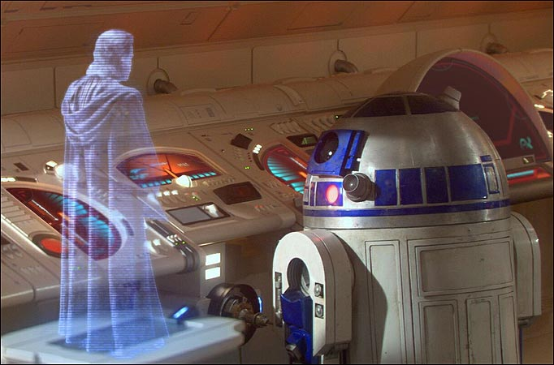

Cela fait maintenant quelque temps que la 3D devient populaire à la maison.
On assiste en ce moment à la commercialisation de nombreux matériels équipés de la 3D.
2.1 La Télévision 3D
La vidéo 3D stéréoscopique, cela existe depuis très longtemps mais ce n’est que dernièrement qu’elle tend à se standardiser. Le dernier film évènement de James Cameron, Avatar, ainsi que l’adoption d’un standard pour le Blu-Ray 3D et l’arrivée des téléviseurs 3D Ready ont relancé l’intérêt du grand public pour les films et les jeux en 3D stéréoscopique.
Pour le moment, regarder la télévision revenait à regarder la réalité avec un seul œil. L’impression de relief était en effet totalement occultée. La vidéo 3D stéréoscopique était donc l’étape indispensable pour nous immerger totalement dans un film ou un jeu vidéo.
2.2 Les consoles portables
Nintendo a annoncé la future sortie de la Nintendo 3DS, une console portable qui succédera à la Nintendo DS. Elle proposera un affichage stéréoscopique ne nécessitant pas de lunettes, grâce à un écran auto-stéréoscopique. En effet ce procédé est très bien adapté à des consoles portables puisqu'il nécessite d'être juste en face de l'écran, ce qui est toujours le cas pour ce type d'appareil. Cette console sortira à la fin du mois de Mars en Europe.LG, fabriquant de téléphones portables, a lui annoncé, au CES 2011, la sortie prochaine d'un Smartphone 3D, Optimus 3D. Il sera équipé lui aussi d'un écran auto-stéréoscopique.
2.3 Les hologrammes
On se demande tous si la technologie de Star Wars sera un jour accessible! Seulement, pour le moment, la technique reste beaucoup plus complexe. Aujourd'hui, un hologramme représente une image en 3D apparaissant comme « suspendue en l'air ». Il résulte en une image d'interférence entre les ondes issues de l'objet photographié et d'une partie du même faisceau laser utilisée pour éclairer l'objet. Si l'on prend un petit caillou et qu'on le jette dans l'eau, il va produire une série d'ondes. Maintenant si l'on prend 2 cailloux et qu'on les jette dans l'eau en même temps, leur ondes vont interférer.
Les détails dans l'hologramme sont très petits (inférieurs au micromètre). Sa réalisation demande :
L'information de la totalité de la scène est distribuée sur toute la surface de l'hologramme. Un petit morceau d'un hologramme permet de reconstituer toute l'image. Mais la netteté de l'image sera plus faible et les angles sous lesquels on peut observer la scène seront plus restreints.
L'hologramme est enregistré avec une lumière monochromatique, ponctuelle et cohérente : le laser.
On qualifie de monochromatique une lumière dont la couleur n'est formée que d'une fréquence ou, par extension de sens, d'une bande très étroite de fréquence au niveau de son spectre. Une source monochromatique émet un rayonnement électromagnétique à une longueur d'onde précise. Par exemple, le rayonnement laser ne comporte qu'une seule composante (une seule longueur d'onde), il a donc une émission lumineuse monochromatique.
Il existe deux sortes d'hologrammes :
COMMENT C'EST FAIT - LES HOLOGRAMMES
envoyé par interactiv - L'info internationale vidéo.